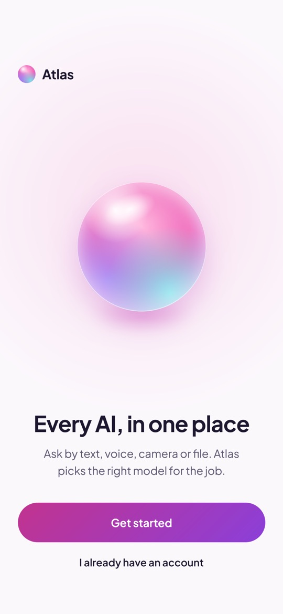
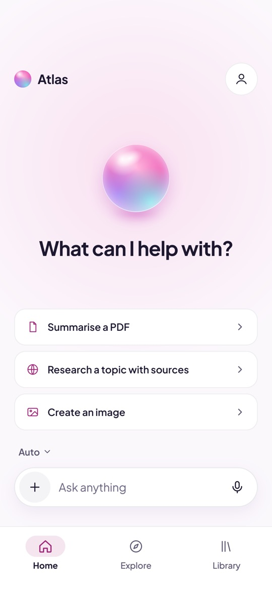
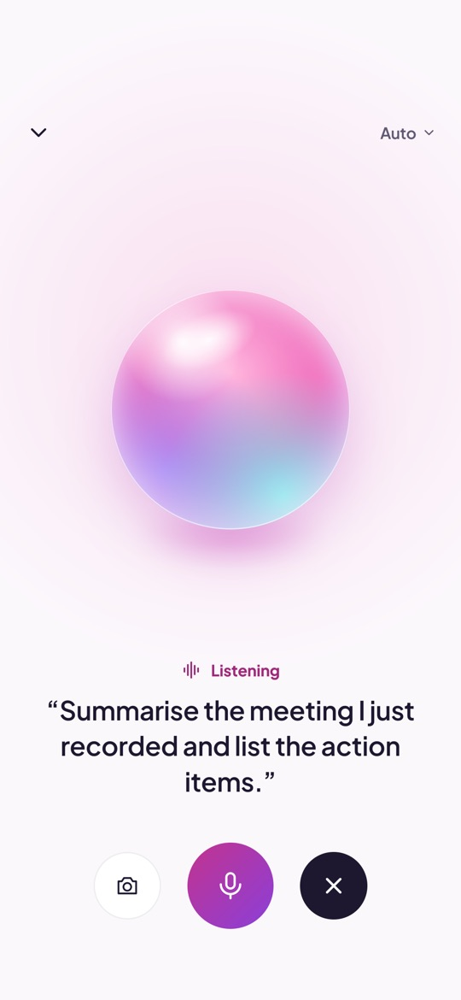

Atlas
An AI assistant reproduced from a design of ten pages and made to work end to end.




What it shows
- Soft light: radial gradients, a blurred background, inner shadows.
- A bottom sheet over a screen, and a row of chips that scrolls sideways.
- A chat that is real: with its server, answers come from a language model, chats are kept and listed, and the chosen model and plan are saved.
- An app that works without its server: when the server does not answer, it is the scripted app of the design.
- A server address chosen at build time, so a deployed address never enters the repository.
The screens
Onboarding, sign in, home, chat, the model picker, live voice, explore, plans, and simplified versions of home and chat.
Run it
cargo test -p atlas
cargo run -p atlas --example screenshot -- out/ 04 --diff --phone
tools/preview.sh atlas
MORNINGSTAR_APP=atlas MORNINGSTAR_ABIS=arm64-v8a tools/build-android.sh --installWith its server:
cd examples/atlas/server
cp .env.example .env # then fill in the keys; .env is never committed
npm start # 127.0.0.1:8788
adb reverse tcp:8788 tcp:8788The server needs a PostgreSQL database and a DeepSeek key; an ElevenLabs key is optional and gives live voice. Node 22 or newer.
Atlas declares no opt-in service, so its APK carries no LiveKit code: about 10 MB. examples/atlas/SCREENS.md is the full description.